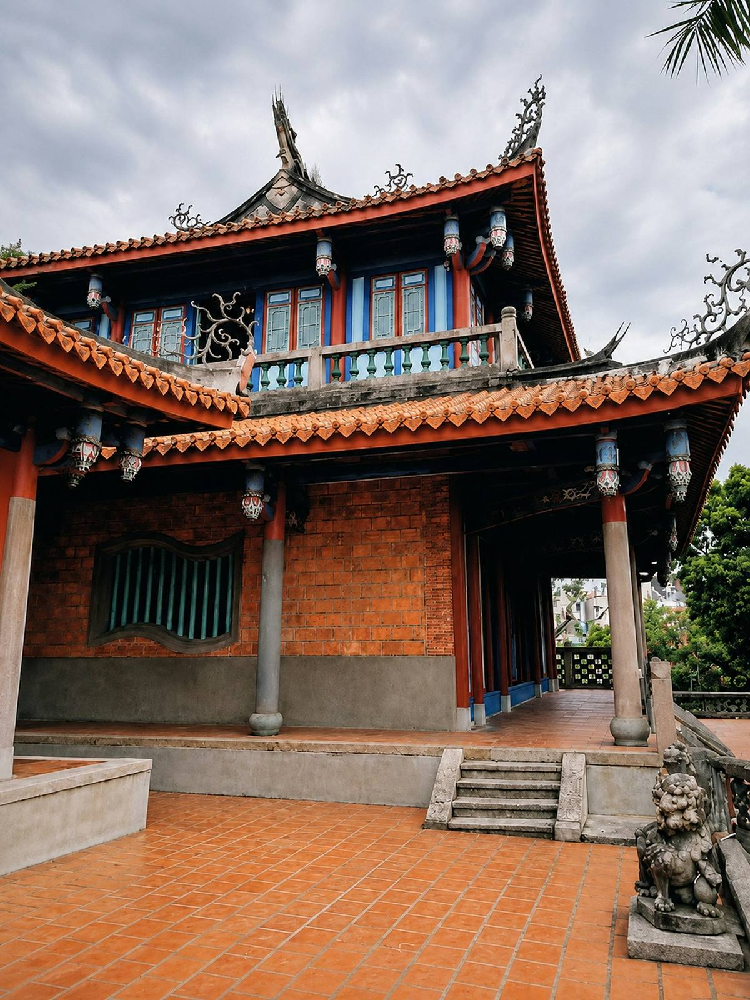

TAINAN

- 출발 후보일2026.11.24 — 11.27
- 기간3박 4일
- 인원3–7명 · 3명 모이면 출발
대만에서 가장 오래된 도시.
사원 앞에서 멈추고, 골목 끝에서 한 끼.
결제 아님 · 날짜 조정 가능 · 혼자 와도 돼요
WHY TAINAN왜 타이난일까
1624년 네덜란드가 짓기 시작한 요새(지금의 안핑고보)부터 정성공의 시대, 청나라 때 대만의 중심 도시였던 시절까지 — 대만 400년 역사가 걸어서 닿는 거리에 겹쳐 있어요.
타이베이보다 느리고, 골목마다 오래된 사원과 노포가 그대로예요. 유적을 보고 나오면 바로 단자이 국수와 두화가 기다려요.
3박 4일이라 휴가를 길게 못 내도 '역사 여행'을 처음 맛보기에 딱 좋아요.
FOR YOU이런 분께 맞아요
- 유적만큼 골목 식당과 야시장이 궁금한 분
- 휴가를 길게 못 내서 3박 4일로 먼저 맛보고 싶은 분
- 많이 걷지 않는 느긋한 일정을 원하는 분
YOU WILL SEE이 여행에서 만나는 것
- 안핑고보 (옛 제일란디아 요새)
- 적감루 (츠칸러우)
- 치메이 박물관 또는 국립타이완역사박물관
- 쓰차오 녹색터널 보트 (우천 시 공예 체험)

SAMPLE FLOW하루 흐름 예시
- 1일차도착, 구시가지 산책, 야시장
- 2일차적감루와 타이난 옛 골목, 로컬 식당
- 3일차안핑고보, 쓰차오 보트, 치메이 박물관
- 4일차디저트 산책, 귀국
일정은 예시예요. 인원·날씨·항공편에 따라 함께 조정해요.
JOIN THE NEXT TABLE타이난, 같이 갈래요?
이름과 연락처만 남겨주세요. 3명이 모이면 일정과 예상 경비를 먼저 보내드려요.
FAQ자주 묻는 질문
혼자 신청해도 돼요?
네, 대부분 혼자 신청해요. 3명이 모이면 출발하는 소규모 여행이라 처음 만나도 금방 편해져요.
신청하면 결제해야 하나요?
아니요. 관심 신청은 결제나 예약 확정이 아니에요. 3명이 모이면 일정과 예상 경비를 먼저 안내드리고, 그때 정하시면 돼요.
날짜는 확정이에요?
지금 날짜는 출발 후보일이에요. 신청하신 분들 일정에 맞춰 조정할 수 있어요.
누가 같이 가요?
인생준준 세준이 함께 가요. 사학과를 나와 5년 동안 40번 넘게 해외를 다니며 역사 공부를 이어온 여행자예요. 유적 앞에서 같이 읽고, 같이 걷고, 같이 먹는 여행을 만들어요.